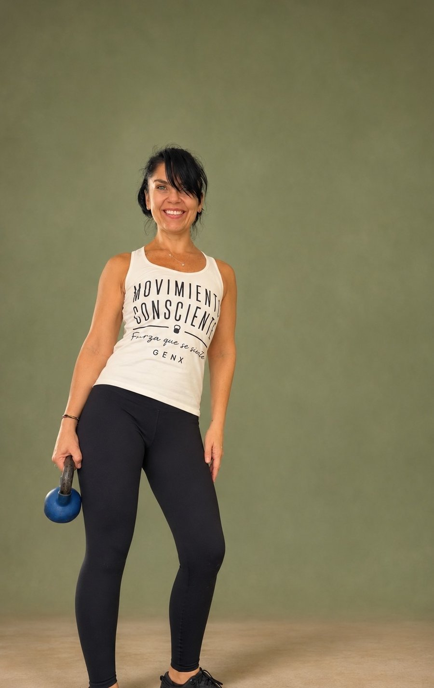

Filosofía GENX: aprender a sostenerte, dentro y fuera del entrenamiento
Por Karla Dellepiane

Hay momentos en los que necesitas volver a encontrarte con tu cuerpo. Escucharlo, reconocer sus posibilidades y descubrir cómo avanzar desde donde estás hoy.
Mi propia experiencia, después de dos cirugías de columna, cambió mi manera de entender el movimiento. Me llevó a prestar atención a cómo respiraba, cómo sostenía una carga y cómo me organizaba para moverme. De ese proceso nació la filosofía que hoy comparto a través del Método GENX.
L4–L5–S1
Para mí, entrenar es construir fuerza, presencia y autonomía. Es aprender a sostenerte mientras las condiciones cambian.
Sostenerte también se aprende.
En el entrenamiento, una carga te pide una respuesta. Necesitas encontrar apoyo, coordinar la respiración y ajustar el movimiento. Algunas veces debes bajar el ritmo; otras, cambiar la estrategia o volver a intentarlo.
En la vida también atravesamos situaciones que nos piden reorganizarnos.
Por eso, una idea central de GENX es: la estabilidad no es rigidez; es adaptación. Puedes ajustar tu posición, encontrar otro apoyo y seguir avanzando sin perder tu centro.
Estar presente en lo que haces
Cada repetición es una oportunidad para observarte: ¿cómo estás apoyando los pies?, ¿estás conteniendo la respiración?, ¿puedes sostener ese movimiento o necesitas adaptarlo?
Estar presente te permite reconocer la diferencia entre esforzarte y forzarte. También te ayuda a valorar los avances que a veces pasan desapercibidos: moverte con mayor seguridad, coordinar una secuencia o realizar algo que antes te costaba.
La confianza se construye con esas experiencias concretas, paso a paso.
La coherencia se practica.
Cuidarte toma forma en tus decisiones cotidianas: dedicarte tiempo, respetar tus límites, asumir un desafío posible y descansar cuando lo necesitas.
Para mí, la coherencia es acercar lo que dices que quieres para ti a lo que haces cada día. Habrá días de energía y días de pausa. La constancia también implica aprender a ajustar el camino para poder sostenerlo.
Las cinco etapas del Método GENX
El Método GENX se desarrolla a través de cinco etapas que conectan el movimiento con nuestra manera de afrontar la vida.
Percibir. Escuchar tu cuerpo y reconocer cómo llegas: qué sientes, cómo respiras y dónde encuentras tensión o seguridad. Es darte un momento para observar antes de actuar.
Conectar. Vincular tu atención con la respiración, los apoyos y el movimiento. Estar presente en lo que haces y reconocer lo que necesitas.
Organizar. Ajustar tu postura, distribuir el esfuerzo y encontrar una respuesta adecuada al desafío. Aprender a sostener una carga también implica saber cuándo cambiar de estrategia.
Integrar. Combinar fuerza, movilidad, estabilidad, equilibrio y coordinación. Permitir que las capacidades que entrenas trabajen juntas y te acompañen en tu vida cotidiana.
Transformar. Convertir lo aprendido en mayor autonomía: moverte con más seguridad, tomar decisiones conscientes y sostener hábitos que te ayuden a crecer.
Estas cinco etapas se vuelven a recorrer ante cada nuevo desafío. Cada experiencia nos ofrece otra oportunidad para percibir, conectar, organizar, integrar y transformar.
Movimiento que te acompaña en la vida
En GENX utilizamos kettlebells, ligas y distintos recursos de movimiento para desarrollar capacidades físicas con conciencia y propósito.
Quiero que lo que construyes al entrenar te acompañe fuera de la clase: al levantarte, cargar algo, recuperar el equilibrio o animarte a una actividad que habías dejado de hacer.
Mi intención es acompañarte a reconocer tus recursos, ampliar tus posibilidades y construir una relación de mayor confianza con tu cuerpo.
Aprender a sostenerte es darte una base desde la cual puedes seguir creciendo.
Muévete y fortalécete con conciencia. Karla Dellepiane
There are moments when you need to reconnect with your body. To listen to it, recognize what it can do, and discover how to move forward from where you are today.
My own experience, after two spinal surgeries, changed the way I understand movement. It led me to pay attention to how I breathed, how I held a load, and how I organized myself to move. From that process came the philosophy I share today through the GENX Method.
L4–L5–S1
For me, training is building strength, presence, and autonomy. It is learning to hold yourself up while conditions change.
Holding yourself up is something you learn.
In training, a load asks you for a response. You need to find support, coordinate your breathing, and adjust the movement. Sometimes you need to slow down; other times, change strategy or try again.
In life we also go through situations that ask us to reorganize.
That is why a central idea of GENX is: stability is not rigidity; it is adaptation. You can adjust your position, find another point of support, and keep moving forward without losing your center.
Being present in what you do
Every repetition is a chance to observe yourself: how are your feet supported? Are you holding your breath? Can you sustain that movement, or do you need to adapt it?
Being present lets you tell the difference between pushing yourself and forcing yourself. It also helps you value progress that sometimes goes unnoticed: moving with more security, coordinating a sequence, or doing something that used to be hard.
Confidence is built from those concrete experiences, step by step.
Coherence is practiced.
Taking care of yourself takes shape in your everyday decisions: making time for yourself, respecting your limits, taking on a challenge that is possible, and resting when you need to.
For me, coherence is bringing what you say you want for yourself closer to what you do each day. There will be days of energy and days of pause. Consistency also means learning to adjust the path so you can sustain it.
The five stages of the GENX Method
The GENX Method unfolds through five stages that connect movement with the way we face life.
Sense. Listening to your body and recognizing how you arrive: what you feel, how you breathe, and where you find tension or security. It is giving yourself a moment to observe before acting.
Connect. Linking your attention with your breathing, your supports, and your movement. Being present in what you do and recognizing what you need.
Organize. Adjusting your posture, distributing effort, and finding a response that fits the challenge. Learning to hold a load also means knowing when to change strategy.
Integrate. Combining strength, mobility, stability, balance, and coordination. Letting the abilities you train work together and go with you in your daily life.
Transform. Turning what you learned into greater autonomy: moving with more security, making conscious decisions, and sustaining habits that help you grow.
These five stages are walked again with every new challenge. Each experience offers us another chance to sense, connect, organize, integrate, and transform.
Movement that goes with you through life
In GENX we use kettlebells, resistance bands, and different movement resources to develop physical abilities with awareness and purpose.
I want what you build while training to go with you outside the class: when you get up, carry something, recover your balance, or dare to try an activity you had stopped doing.
My intention is to help you recognize your resources, expand your possibilities, and build a relationship of greater trust with your body.
Learning to hold yourself up gives you a base from which you can keep growing.
Move and grow stronger, with awareness. Karla Dellepiane
Este artículo es orientativo y no reemplaza la indicación de un profesional de la salud.